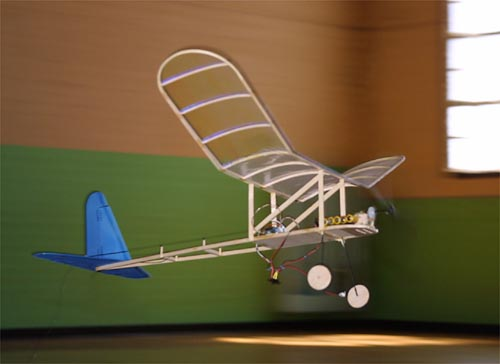
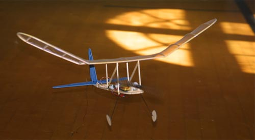
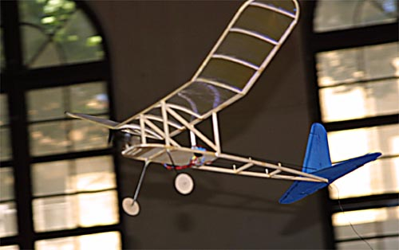
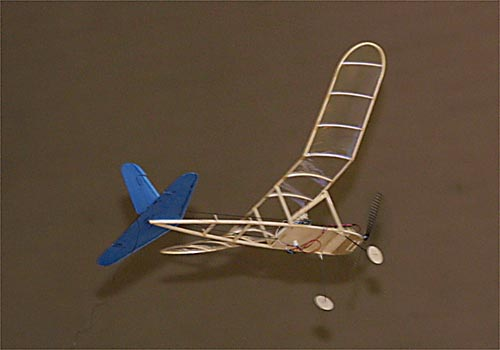

|
In November of 1936 Bill Effinger and Thracey Petrides published a 60" span model for experimenting with gas powered engines called The Flying Aces Stick. This model was little more than an overgrown rubber powered R.O.G. stick model with a fuselage platform for equipment installation. By mounting everything out in the open, it was readily available for the inevitable fidgeting and experimenting.
The FA Stick was quick, easy and cheap to build, and it flew exceptionally well to boot. All of these traits make a smaller version a natural for experimenting with and testing the new micro radio gear and propulsion systems. Were I to make another today, I would try the power and control systems from one of the new micro indoor RC models readily available at your local hobby shop. Their single-cell LiPo operation would inevitably save quite a bit of weight. A quick estimate suggests the weight could nearly be cut in half, slowing the FA Stick significantly for indoor flying. |

| span: | - | 24" |
| area: | - | 95 sq in. |
| weight: | - | 2.1 oz |
| wing loading: | - | 3.2 oz/sq ft |
| motor: | - | N20-6V 5:1* |
| prop: | - | WES16x12 Carbon* |
| battery: | - | 5x50 ma |
| servos: | - | Wes-Technik * |
| rx: | - | Skyhooks and Rigging Hybrid with ESC |
| * These components were purchased from Todd's Models though I believe they have since closed shop. |
|
|
| This model was featured as a construction article in the May 2000 issue of RCMicroFlight, now out of print. If you are inclined to try one on your own, I do have full sized plans available for this model for $10 US, postpaid. If you are interested, send me an email and we can discuss how to make that happen. |


Other Builders' Models of the Flying Aces Stick
Copyright 2002-2014, Thayer Syme. All rights reserved